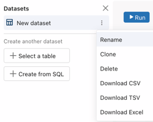
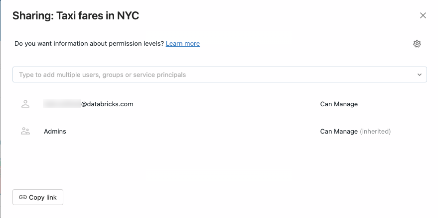
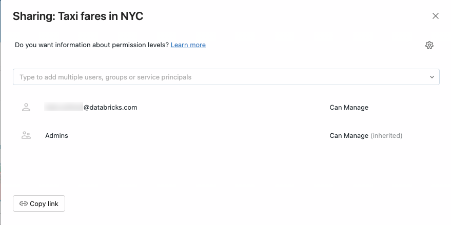

What are Lakeview dashboards?
Preview
This feature is in Public Preview.
You can use Lakeview dashboards to build data visualizations to share informative data insights with your team.
Lakeview dashboards contain a new visualization library and configuration experience.
Lakeview dashboards manage permissions to datasets alongside visualization permissions. They differ from Databricks SQL dashboards and do not reference or display content created and managed through Databricks SQL queries. For more information on Databricks SQL dashboards, see Databricks SQL dashboards.
Note
Lakeview dashboards are intended to replace Databricks SQL dashboards.
Lakeview dashboards have the following components:
Data: The Data tab allows users to define datasets for use in the dashboard. Datasets are bundled with dashboards while sharing.
Canvas: The Canvas tab allows users to create visualizations and construct their dashboard.
Define your datasets
Use the Data tab to define the underlying datasets for your dashboard.
You can define datasets as any of the following:
An existing Unity Catalog table or view.
A new query against one or more tables or views.
Note
To migrate a Databricks SQL query to Lakeview, copy and paste the SQL query text into the Lakeview dashboard query editor to define a new dataset.
To migrate a Databricks SQL query to Lakeview, copy and paste the SQL query text to define a new dataset.
After defining a data set, you can use the  kebab menu to the right of the dataset name to rename, clone, or delete it. You can also download the dataset as a CSV, TSV, or Excel file.
kebab menu to the right of the dataset name to rename, clone, or delete it. You can also download the dataset as a CSV, TSV, or Excel file.

Dataset optimizations
Lakeview datasets include the following performance optimizations:
If the dataset result size is small (less than 64K rows), the dataset result is pulled to the client and visualization-specific filtering and aggregation is performed on the client. Filtering and aggregating data for small datasets is very fast and ensuring that your dataset is small can help you optimize dashboard performance. With small datasets, only the dataset query appears in the query history.
If the dataset result size is large (>= 64K rows), the dataset query text is wrapped in a SQL
WITHclause and the visualization-specific filtering and aggregation is performed in a query on the backend rather than in the client. With large datasets, the visualization query appears in the query history.For visualization queries sent to the backend, separate visualization queries against the same dataset that share the same
GROUP BYclauses and filter predicates are combined into a single query for execution. In this case, users might see one combined query in the query history that is fetching results for multiple visualizations.
Add visualizations, text, and filter widgets with the canvas
Use the Canvas tab to construct your dashboard. Use the toolbar at the bottom of the canvas to add widgets such as visualizations, text boxes, and filters.
Visualizations
Create a visualization by adding a visualization widget to the Canvas. Supported visualizations include line, bar, area, pie, scatter, counter, table, and pivot chart types.
Use the Databricks Assistant: Create visualizations by describing the chart you want to see in natural language and let the assistant generate a chart. After it is created, you can modify the generated chart using the configuration panel. You cannot use Assitant to generate table or pivot chart types.
Use the configuration panel: Apply additional aggregations or time bins in the visualization configuration without modifying the dataset directly. You can choose a dataset, x-axis values, y-axis values, and colors in the configuration panel. See Lakeview dashboard visualization types for examples of each supported visualization type.
Text widgets
Markdown is a markup language for formatting text in a plain text editor. You can use markdown in text widgets to format text, insert links, and add images to your dashboard.
To add a static image in a text widget, add markdown image syntax with a desired description and url:
from a publicly available URL. For example, the following markdown will insert an image of the Databricks logo:. To resize the image, resize the widget dimensions.To add an image from DBFS, add markdown image syntax with a desired description and FileStore path:
. To resize the image, resize the widget dimensions. For more information on DBFS, see What is the Databricks File System (DBFS)?.
For more information on markdown syntax, see this guide.
Dataset filters
Lakeview dashboards support the following filter types:
Single select dropdown
Multi-select dropdown
Text
Date
Date range
You can connect filters to one or more datasets. To connect a filter to more than one dataset, add multiple Filter on conditions, up to one per dataset. The filter applies to all visualizations built on the selected datasets. Filter selection cascades across all other filters.
Note
Query parameters are not supported in this Lakeview dashboard preview release.
Lakeview filters always apply to the entire dataset. If the dataset is small, the Lakeview filter is applied directly in the browser to improve performance. If the dataset is larger, the filter is added to the query that is executed in the SQL warehouse.
Draft and collaborate on a dashboard
New dashboards begin as a draft. You can share the draft with other users in your workspace to collaborate. All users use their own credentials to interact with the data and visualizations in dashboard drafts.
For more on sharing, see Share Lakeview dashboards.
Publish a Lakeview dashboard
Publish a dashboard to create a clean copy of the current dashboard you can share with any user in your Databricks workspace. Publishing does not automatically share dashboards with users. You can explicitly share dashboards with view permissions to users or groups.
You must have at least Can Edit permissions to publish a Lakeview dashboard.
Open a Lakeview dashboard.
In the Share drop-down menu in the upper-right, click Publish. The Publish dialog appears.
Choose the credentials to use for the published Lakeview dashboard. You can optionally choose to embed your credentials.
Embed credentials: All viewers of a published dashboard can run queries using your credentials for data and compute. This allows users to see the dashboard even if they don’t have access to the underlying data or SQL warehouse. This might expose data to users who have not been granted direct access to it. This is the default option.
Don’t embed credentials: All viewers of the published dashboard run queries using their own data and compute credentials. Viewers need access to the workspace, the attached SQL warehouse, and the associated data to view results in the dashboard.
Click Publish.
You can share the published dashboard with any user in your Databricks workspace. For more on controlling access to your dashboard, see Share Lakeview dashboards.
Transfer ownership of a Lakeview dashboard
If you are a workspace admin, you can transfer ownership of a Lakeview dashboard to a different user.
Navigate to the list of Lakeview Dashboards. Click on a dashboard name to edit.
Click Share.
Click the
 icon at the top-right of the Sharing dialog.

icon at the top-right of the Sharing dialog.
Begin typing a username to search for and select the new owner.
Click Confirm.
The new owner appears in the Sharing dialog with Can Manage permissions. To view dashboards listed by owner, navigate to the list of available Lakeview dashboards by choosing the  and then clicking the Lakeview Dashboards tab.
and then clicking the Lakeview Dashboards tab.
How to share a Lakeview dashboard with other Databricks account users
Draft dashboards cannot be shared with users outside of the workspace. Use the following steps to publish and share your dashboard with account users.
Navigate to the draft dashboard.
Publish the dashboard with Embed credentials (default) setting. Embedding your credentials means that the SQL warehouse and queries use the publisher’s data and warehouse permissions to update the published dashboard. This is necessary if you want to share with users outside of the originating workspace. Users outside of the workspace do not have their own permissions to access the source data or SQL warehouse, so they won’t be able to access the data in the dashboard without embedded credentials.
Click the Share button, and use the Sharing dialog to set permissions for users and groups in your Databricks account. The Sharing dialog includes choices for sharing with particular workspace users, workspace groups, specific account users, and account groups, including an Account Users group that contains everyone in the Databricks account. To share with all users, select Account Users.
Share the link with users. Access the published dashboard by clicking the
 next to the Share button. Copy the URL and send it, or post it, so that users and groups can access the dashboard.
next to the Share button. Copy the URL and send it, or post it, so that users and groups can access the dashboard.
Note
Permissions for account users and groups are restricted to Can View access for published dashboards. Granting elevated permissions to account users, like Can Edit, will display in the interface. However, until the assigned user is signed into the workspace, their permissions default to Can View.
If that user or group is later added to the workspace, they will access the dashboard at the elevated level of permissions, such as Can Edit in this example.
Network considerations
If IP access lists are configured, a dashboard published to the account is only be accessible to account users if they access it from within the approved IP range, such as when using a VPN. For more information on configuring access, see Manage IP access lists.